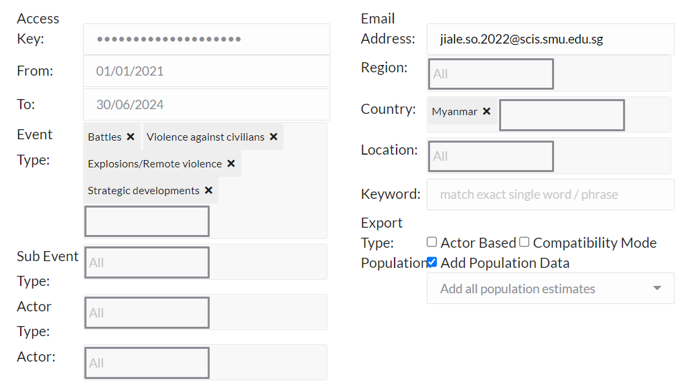

dxIsk4EIsia10WN3u9Vj
#Rural Vs Urban Divide
#Population?
#State level
#Division Level
#Region?
#Ethinicity?
#Government?
#Type of Acceident
#Death rate?
#conflict rate?Take_Home Exercise 1: Geospatial Analytics for Social Good: Application of Spatial and Spatio-temporal Point Patterns Analysis to discover the geographical distribution of Armed Conflict in Myanmar
1.0 Introduction
The study of armed conflicts in Myanmar has gained critical importance in understanding the geographical distribution and intensity of violence across different regions. Myanmar’s complex ethnic composition and ongoing civil strife make it a unique case for geospatial analysis. This project aims to apply spatial and spatio-temporal point pattern analysis methods to uncover the patterns of armed conflict between January 2021 and June 2024.
By leveraging conflict data from the Armed Conflict Location & Event Data (ACLED) and geospatial tools, we will focus on visualizing and interpreting conflict density through heat maps, Kernel Density Estimation (KDE), and advanced spatio-temporal analysis.
Our analysis will focus on four types of conflict events:
- Battles,
- Explosion/Remote violence,
- Strategic developments,
- Violence against civilians,
with particular attention paid to quarterly patterns in conflict occurrence. This study not only seeks to uncover spatial clusters of conflict but also to highlight areas of humanitarian concern.
2.0 Setting Up The Environment & Dataset
2.1 Installing the required Packages
Key Packages Used in the Project:
sf: Handles simple features in R, allowing for spatial data manipulation and analysis. It is crucial for reading and managing geospatial data like shapefiles (e.g., Myanmar’s administrative boundaries).raster: Used for raster-based spatial data manipulation, especially for working with raster maps, such as Kernel Density Estimation (KDE) results.spatstat: A powerful package for spatial point pattern analysis. It helps to analyze and visualize spatial point data, particularly for identifying clusters or patterns in armed conflict events.sparr: Builds onspatstatand focuses on performing spatial and spatio-temporal kernel smoothing, which will be crucial for KDE and heatmap creation.tmap: A thematic mapping package that will allow us to create maps, including KDE visualizations on an OpenStreetMap base.tidyverse: A collection of data manipulation packages likedplyr,ggplot2, andpurrr. It’s essential for data cleaning, manipulation, and visualization tasks.stpp: Used for spatio-temporal point pattern analysis, crucial for analyzing how conflict events evolve in both space and time.skimr: A quick and comprehensive tool to provide summaries and descriptive statistics for datasets, helping in the initial exploration.gganimate: Extendsggplot2to create animated visualizations. We can use this for animated time-series or evolving conflict maps.ggplot2: The core plotting package in R, essential for creating visualizations like time series plots and KDE heatmaps.plotly: Useful for creating interactive visualizations, allowing users to explore spatial data interactively (e.g., hover over points to see conflict details).pacman: is a package management tool in R designed to streamline the process of loading and installing packages.
pacman::p_load(sf, raster, spatstat, sparr, tmap, tidyverse, stpp, skimr, gganimate, ggplot2, plotly)2.2 Data-set involved in this topic
For this analysis, we use two key datasets:
2.2.1 ACLED Armed Conflict Data
Location & Event Data (ACLED)platform, which maintains an extensive record of conflict events globally. For this specific analysis, we will limit the dataset by filtering based on the following parameters to streamline data preparation and minimize the need for extensive data cleaning:
| Data Parameter | Filter Category |
|---|---|
| Date Range | From 01/01/2021 to 30/06/2024. |
| Event Type | 1. Battles 2. Violence Against Civilians 3. Explosions/Remote Violence 4. Strategic Developments |
| Country | Myanmar |
ACLED Configuration

2.2.2 Myanmar Administrative Boundaries (Shapefiles):
This dataset provides the geographical boundaries of Myanmar’s administrative divisions, from the national level down to the township level. It is essential for mapping conflict events to specific regions.
Note
Why use District and regions?